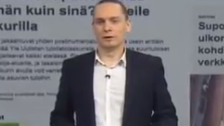

Käytä nuolinäppämiä liikkuaksesi
There are 10 kinds of people in this world.
Those that understand binary and those that don’t.
Aamupäivällä
- Osaajien välinen yhteistyö:
Kaikkea ei pidä eikä tarvitse osata itse.
- Verkon kerronnan eri muodot:
Data, palvelut, verkkotaitot, verkon sisällöt
Tulolaskuri


Tulolaskuri
Halusimme toteuttaa Veropäivän uutisointiin datavetoisen jutun.
Tilasimme Tilastokeskukselta tulotiedot postinumeroalueittain. Kts. Paavo
Tulolaskuri
- Laskuri mahdollisti, että lukija pystyy tarkastelemaan ilmiötä omista kiinnostuksen kohteistaan.
- Tekstiin nostimme mielenkiintoisia havaintoja.
Tulolaskuri
- Keräsi 200 000 klikkausta.
- Vuoden luetuimpia juttuja ~ Top 5.
- Tiedot pystyi jakamaan helposti somessa.
- Merkittävästi suositumpi kuin "Katso kuka tienasi eniten" -juttu.
Tulolaskuri
Toistettavuus ja jalostaminen:
Tulolaskuri
Data tuli siis viranomaiselta. Me jalostimme ja analysoimme sen kiinnostavaksi.
Asuntoetuselvitys
- Halusimme tutkia työsuhdeasuntoihin liittyvää verotusta.
- Meitä kiinnosti onko työsuhdeasunto kannattava ja kenen kannalta.
Asuntoetuselvitys
- Verottajan edustajan mukaan kaavalla laskettu verotusarvo vastaa 90 %:sti vuokra-asuntojen markkinavuokraa.
- Oma asuntoni: 730 € vs. 502 € = 69 %
Asuntoetuselvitys
- Mistä saisimme suuren määrän vuokralla olevien asuntojen tietoja?
- → Vuokraovi.com
- → Oikotie.fi
- Kohteeksemme valikoitui Vuokraovi.com.
Asuntoetuselvitys
- Haimme koneellisesti Vuokraovi.com-sivustolta kaikkien vuokralla olleiden asuntojen tiedot.
- Tietokoneohjelma imitoi ihmisen toimintaa ja tiedot tallensi kohde kohteelta.
Asuntoetuselvitys
- Verottajan edustajan mukaan verotusarvon vastaavuus on 90 %. Meidän selvityksemme mukaan tämä vastaavuus oli 73 %.
Asuntoetuselvitys
Data oli olemassa, mutta jotta sitä voitiin hyödyntää se piti hankkia. Hankimme datan ja teimme sen perusteella havaintoja.
Rantatunneli
Kun tehdään omaa sisältöä ja aineiston hankintaa täytyy projektiin varata reilusti aikaa.
...ja täytyy oppia karsimaan kun materiaalia on runsaasti.
Rantatunneli
Tämän kaltaisten verkkototeutusten kohdalla käsikirjoittamisen ja suunnittelun rooli korostuu.
Abraham Wald
- Unkarilainen matemaatikko
- Työskenteli brittien ilmavoimien palveluksessa II maailmansodassa.
- Sai tehtäväkseen tutkia miten pommikoneita kannattaisi vahvistaa.